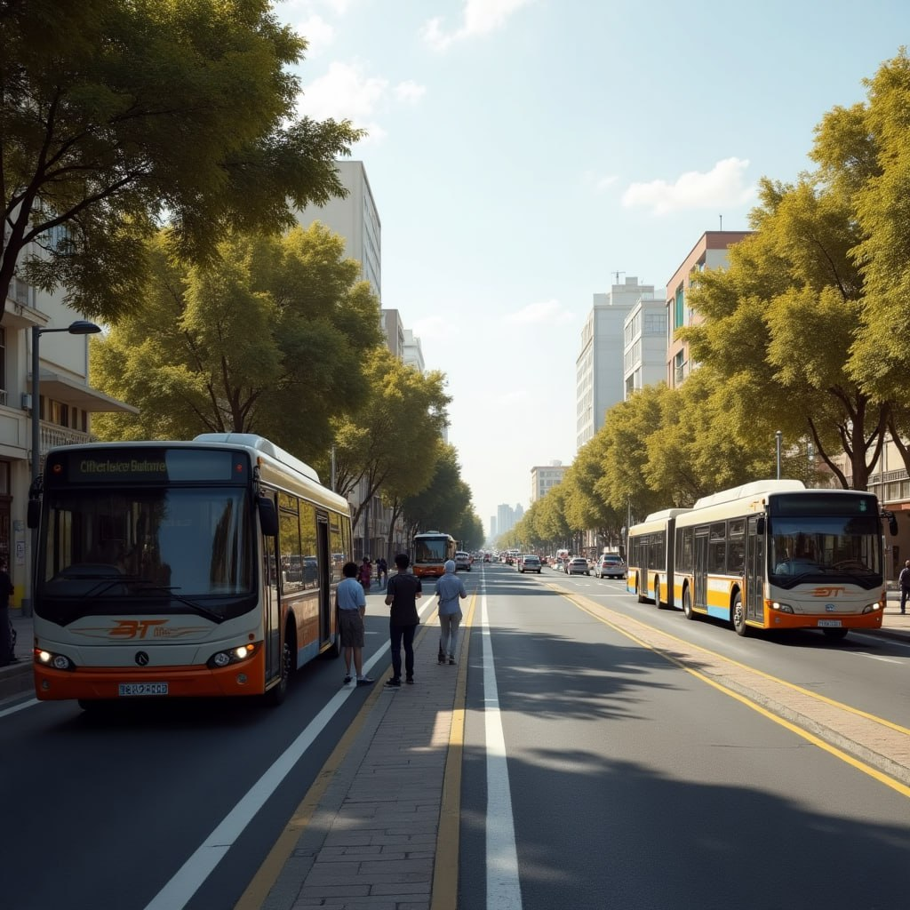

Introduction
Addis Ababa's Light Rail Transit (LRT), launched in 2015, aimed to modernize public transport. However, issues like delays, overcrowding, and low speed have reduced its effectiveness. This chapter presents the background and outlines the need to compare LRT with the Bus Rapid Transit (BRT) system, which is cheaper, more flexible, and potentially more effective. The chapter also defines the research questions, objectives, and scope, focusing on evaluating the LRT service and exploring the feasibility of BRT as an alternative.

Literature Review
This chapter reviews global experiences with LRT and BRT systems, highlighting key differences in infrastructure cost, flexibility, and performance. LRT is high-capacity but costly and rigid, while BRT offers speed and lower costs with adaptability. Case studies from cities like Bogotá, Lahore, and Jakarta illustrate success and failure factors. Environmental and economic implications are also explored, showing BRT as more viable for fast-growing cities like Addis Ababa.

Research Methodology
A mixed-methods approach was used, combining surveys, field data, and SUMO simulations. The study focused on the Tor-Hailoch to Ayat LRT corridor. Primary data was collected via Kobo Toolbox from LRT users, while secondary data came from transport offices. SUMO was used to simulate LRT and BRT scenarios. Both quantitative (e.g., speed, capacity) and qualitative (e.g., user satisfaction) analyses were conducted to compare the serviceability and feasibility of LRT and BRT.
Results and Discussion
Survey results revealed user dissatisfaction with LRT due to long waits, crowding, and unreliable service. Over 98% of respondents expressed a preference for BRT, citing speed, frequency, and comfort. The LRT operates below its design speed and suffers from congestion and maintenance issues. SUMO simulations confirmed BRT's potential to deliver better performance with shorter waiting and travel times. Economic analysis showed BRT to be more cost-effective and quicker to implement.
Conclusion and Recommendations
The Addis Ababa Light Rail Transit (LRT) system has not met expectations due to delays, overcrowding, limited coverage, and unreliable service; based on user surveys and SUMO simulation analysis showing that 98% of respondents prefer Bus Rapid Transit (BRT), this study recommends introducing BRT—either as a complement to or replacement for LRT—alongside operational improvements, phased implementation, public engagement, institutional collaboration, and data-driven planning to enhance the city's public transportation system.